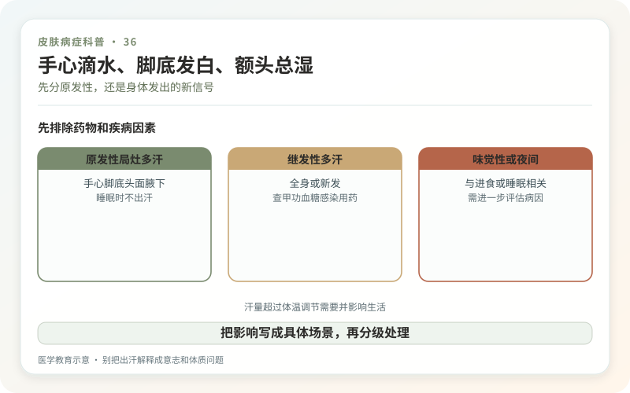
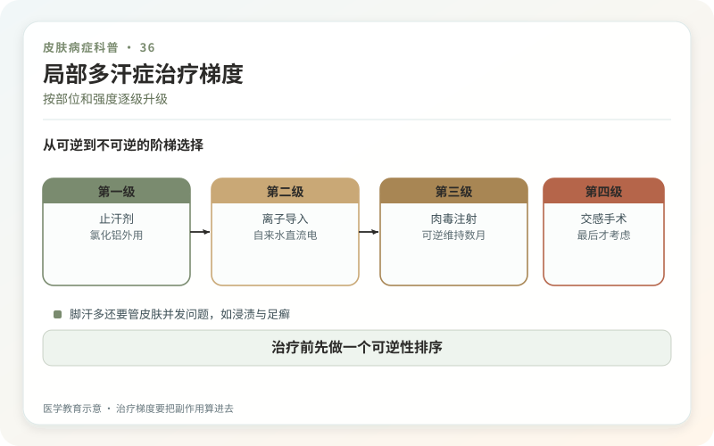

出汗本来是身体散热机制，但如果手掌、足底、头面或其他局部在并不热、没有剧烈运动时仍大量出汗，持续影响握笔、使用手机、工作社交和鞋袜皮肤，就可能属于局部多汗症。诊断看的是“不合时宜、影响功能”，不是和别人比谁的汗珠更大。
原发性局部多汗常从儿童或青春期开始，双侧对称，清醒时明显，睡着后通常减少，并可能有家族史。继发性多汗则可来自药物、甲状腺、感染、低血糖、神经系统或其他疾病，常见全身性、夜间明显或成年突然开始。

这些线索提示先查原因
近期突然出现全身大汗、夜里汗湿床单，伴发热、体重下降、心悸、手抖、胸痛、晕厥，或开始新药后出现，应就医评估。单侧局部多汗、神经症状或头部外伤手术史也需要进一步判断。
医生会询问发生年龄、部位、频率、诱因、睡眠和药物，按线索选择血糖、甲状腺等检查。没有红旗时，原发性局部多汗并不需要把全身器官都查一遍。

治疗按部位和强度逐级升级
含氯化铝等成分的止汗剂常是起点，应涂在完全干燥、完整的皮肤上，常在夜间使用；刺激时需调整频率或处理皮炎。止汗剂减少汗液，除臭剂主要改善气味，两者功能不同。
手足多汗可考虑离子导入，通过水中微电流减少出汗，需要初期多次和后续维持；有心脏起搏器、妊娠等情况要先咨询。肉毒毒素注射可暂时阻断局部神经信号，手足注射可能疼痛并出现短期肌力影响，效果也会随时间消退。
头面或多部位严重多汗时，医生可能评估抗胆碱能外用或口服药，但口干、视物模糊、便秘、尿潴留和高温下散热受限都要考虑。手术交感神经处理只适用于严格筛选病例，代偿性出汗可能成为新的长期负担。
脚汗多，还要管皮肤并发问题
透气鞋袜、及时更换、鞋内干燥可减少浸渍和异味。足底发白、裂口、瘙痒要鉴别足癣；出现点状凹坑和明显臭味可能有细菌相关问题。止汗并不能替代抗真菌或抗菌诊断。
手掌反复湿润也会加重湿疹，酒精和高频洗手进一步破坏屏障。工作需要戴手套时，可在安全允许下间歇通风，并配合保湿。
别把出汗解释成意志和体质问题
紧张会让汗更多，但多汗本身也会让人紧张，形成循环。它不是“心理素质差”，更不是必须靠忍耐。可以为演讲、考试等具体场景制定预防方案，也可以把长期功能改善作为目标。
所谓一次排汗排毒、永久封闭汗腺都不准确。好的治疗不是让全身一滴汗都没有，而是把过量的局部出汗降到不再控制生活。
先分原发性，还是身体发出的新信号
原发性局部多汗常对称发生在腋下、手、足或面部，可能从较年轻时开始，睡眠中反而减轻。若过去不出汗却近期突然出现，表现为全身或夜间大汗，并伴发热、心悸、体重变化，或在使用某些药物后发生，就应评估甲状腺、感染、代谢和药物等继发原因。诊断不是只看汗量，还要看起病方式和伴随症状。
把影响写成具体场景
记录一周：每天换几次衣服、纸张和键盘是否被浸湿、握手和穿鞋是否受影响、皮肤有没有浸渍破损。治疗目标可设为完成一次会议不换衣、能稳定握笔或减少足部感染，而不是追求全身完全无汗。止汗剂应按产品和医嘱用于干燥皮肤，破损或刚剃毛后使用更易刺激；出现明显红痛应暂停并咨询。
治疗梯度要把副作用算进去
离子导入、肉毒毒素、口服抗胆碱能药和手术各有适用部位、维持时间和风险。口服药可能引起口干、视物模糊、便秘、尿潴留及散热困难；高温运动环境尤其要谨慎。手术可能出现代偿性出汗，不能只听“永久止汗”。合理路径通常是从低风险、可逆方案开始，按生活负担升级，并为疗效和副作用设置复评节点。
治疗前先做一个可逆性排序
先问自己最需要改善哪一个部位、哪一种场景，再从外用和行为调整等低风险方案开始。若升级到注射、能量或手术，要求说明维持时间、失败后的退路及是否影响身体散热。多汗不是意志薄弱，但完全不出汗也不是越健康；目标是恢复功能，而不是把正常生理反应归零。